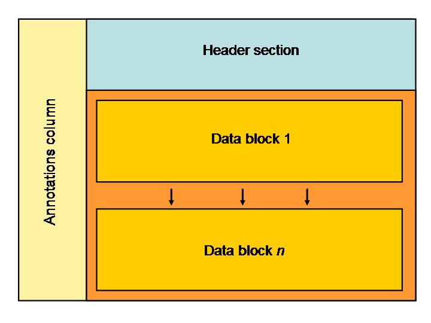
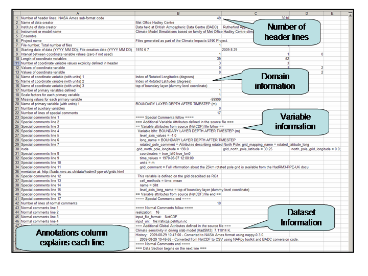

The HadRM3-PPE-UK dataset has also been converted to a text format for users not accustomed to working with binary data. This comma-separated variable (CSV) format is similar to that used in the UK Climate Projections (UKCP09) as described in the UKCP09 format specification. This page provides an overview of the structure of the CSV archive and files. It contains the following sections:
The converted CSV version of the archive mirrors the NetCDF archive except for the directory um_csv replacing um_nc in terms of the directory structure. However, the CSV files are provided in sub-directories by NetCDF Variable ID (see variables page for a list of these). To save space and improve download efficiency the CSV are grouped into zip files as described in the section below. An example path to a single zip file is:
/badc/hadrm3/data/hadrm3-ppe-uk/um_csv/afixq/ape/blht/afixqa.peh0jun-blht.zip
Where blht is the variable ID used to describe BOUNDARY LAYER DEPTH AFTER TIMESTEP.
A renamed set of directories has also been created to aid access to the files. These are located under the directory:
/badc/hadrm3/data/hadrm3-ppe-uk/renamed_csv/
The full file paths follow the naming convention below:
/badc/hadrm3/data/hadrm3-ppe-uk/renamed_csv/<rcm_member>/<time_processing>/<variable_id>/<zip_file_of_csv_files>
For example:
/badc/hadrm3/data/hadrm3-ppe-uk/renamed_csv/hadrm3q16/daily/blht/afixqa.peh0jun-blht.zip
With the following mappings:
CSV formats are less efficient than binary formats for storing data. As a result they take up significantly more disk space and are slower to download. We have therefore grouped the CSV files into zip files. Each zip file contains 30 daily CSV files for a single variable.
The contents of each zip file is straightforward for users to interpret as the CSV file names contain the variable ID and the date/time. An example listing is:
Zip file: afixqa.peh0jun-blht.zip
Contents:
afixqa.peh0jun-blht-1970060112.csv
afixqa.peh0jun-blht-1970060212.csv
afixqa.peh0jun-blht-1970060312.csv
afixqa.peh0jun-blht-1970060412.csv
afixqa.peh0jun-blht-1970060512.csv
afixqa.peh0jun-blht-1970060612.csv
afixqa.peh0jun-blht-1970060712.csv
afixqa.peh0jun-blht-1970060812.csv
afixqa.peh0jun-blht-1970060912.csv
afixqa.peh0jun-blht-1970061012.csv
afixqa.peh0jun-blht-1970061112.csv
afixqa.peh0jun-blht-1970061212.csv
afixqa.peh0jun-blht-1970061312.csv
afixqa.peh0jun-blht-1970061412.csv
afixqa.peh0jun-blht-1970061512.csv
afixqa.peh0jun-blht-1970061612.csv
afixqa.peh0jun-blht-1970061712.csv
afixqa.peh0jun-blht-1970061812.csv
afixqa.peh0jun-blht-1970061912.csv
afixqa.peh0jun-blht-1970062012.csv
afixqa.peh0jun-blht-1970062112.csv
afixqa.peh0jun-blht-1970062212.csv
afixqa.peh0jun-blht-1970062312.csv
afixqa.peh0jun-blht-1970062412.csv
afixqa.peh0jun-blht-1970062512.csv
afixqa.peh0jun-blht-1970062612.csv
afixqa.peh0jun-blht-1970062712.csv
afixqa.peh0jun-blht-1970062812.csv
afixqa.peh0jun-blht-1970062912.csv
afixqa.peh0jun-blht-1970063012.csv
Each individual CSV file contains a single variable for a single daily time step. The data has been structured this way so that each UK domain grid is written in a tabulated data block that can be read into a standard spreadsheet package. Some variables have a single vertical level so there is only one 2-dimensional data block in the file. Other variables have multiple vertical levels, these are presented in a 2-dimensional data block per level
The basic structure of the file is as follows:

The first column provides annotations that aid the user in understanding the header and data sections. Note that once you have developed this understanding it is simple to remove or hide the first column when viewing or processing the data.
The CSV header contains a significant amount of relevant and useful metadata. The annotation column explains this metadata line by line. The image below highlights some of the key features.

The data section of the file contains one, or more, groups of the following:
The data is described on the Met Office Hadley Centre Regional Model grids. There are two versions of the grid, slightly offset from each other. The variables page shows which grid is used for each variable. The grids page describes the grids in detail.
Due to the pole having a rotated North Pole the x-axis and y-axis of the grids correspond to rotated longitude and rotated latitude. Since these are not real latitudes and longitudes the header of the CSV file uses index values rather than rotated coordinate values. Those wishing to find out the real location of each grid cell should consult the grids page.